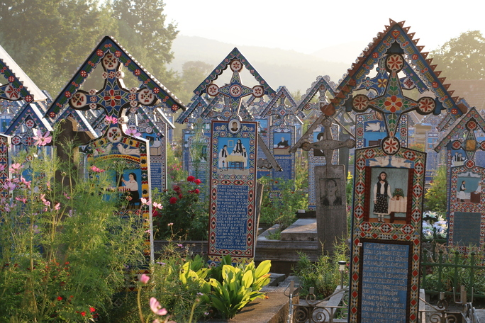
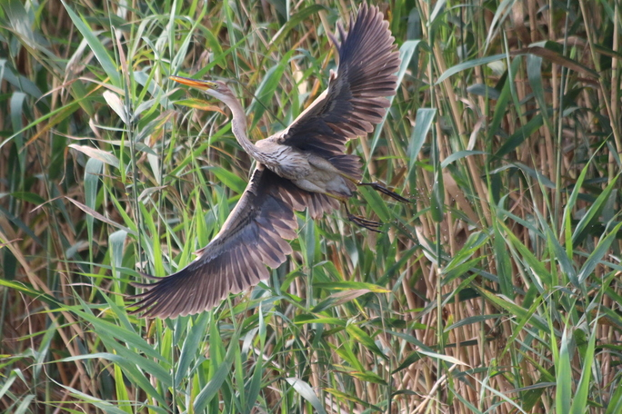
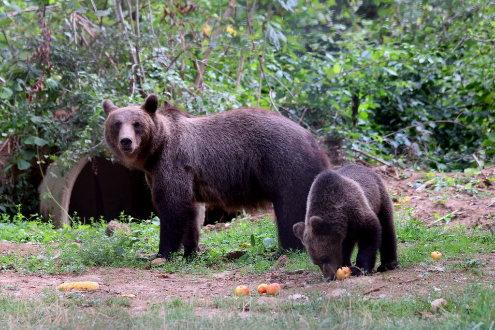
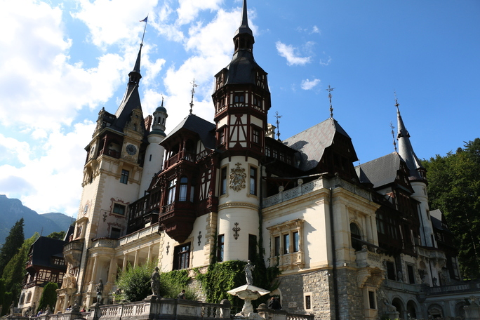

Rumunia to kraj zapomniany przez Polaków. Starsze pokolenia pamiętają go jako „kraj Cyganów". Żyje tam obecnie ponad 19 mln ludzi, a w tym jedynie około 2,5 mln Romów. Romowie to lud osadniczy, niegdyś mieszkający w wozach i przyczepach, przemieszczający się z miejsca na miejsce. Do tej pory w górach można zobaczyć jeszcze takie przyczepy. Jednak większość Romów osiedliła się i zamieszkała na stałe w jednym miejscu.
Na pewno zastanawiacie się, co w takiej Rumunii można zobaczyć. Gdy wybieraliśmy kierunek na wakacje, też się nad tym zastanawiałam. Ale wystarczyło tylko otworzyć przewodnik i zobaczyć zdjęcia przepięknych gór, miasteczek, malowanych kościołów. Nie można też zapomnieć o delcie Dunaju – miejscu wprost magicznym.
Blisko granicy z Ukrainą, w miejscowości Sapanta, znajduje się jedno z najbardziej niesamowitych miejsc, jakie kiedykolwiek widziałam – „wesoły cmentarz”. Niepozorny kawałek ziemi przy starej, prawie zapomnianej cerkwi, w otoczeniu walących się budynków. Dlaczego ten cmentarz jest „wesoły”? W sumie dobre pytanie! Co może być wesołego w śmierci i przemijaniu, żałobie i smutku? Otóż na tym cmentarzu nie ma grobów, jakie znamy. Nie ma też kamieni z tabliczkami upamiętniającymi zmarłych, jak w Finlandii. Nagrobki w Sapanta są w podobnym stylu – każdy ma niebieski, drewniany krzyż (ten kolor doczekał się już swojej nazwy, to „błękit Sepanty”) i na każdym wyrzeźbiona lub namalowana jakaś scena z życia zmarłego, obrazująca jego zawód lub hobby. Dodatkowo jest też sarkastyczny tekst, w którym zmarły opowiada o sobie w pierwszej osobie – o swoim życiu, pracy, wadach lub zaletach. W 1999 roku cmentarz został wpisany na listę światowego dziedzictwa UNESCO. Obecnie znajduje się tam ponad 900 nagrobków. Co ciekawe, Rumunii nie obchodzą święta zmarłych tak jak my. Wybierają jeden dzień w roku, ważny dla zmarłego, w tym dniu uczestniczą w nabożeństwie, na którym poświęcają jedzenie, a następnie spożywają je przy grobie.

Legendę o Drakuli siejącym postrach w Transylwanii słyszał każdy. Co ciekawe, nie jest to jedynie wymysł Brama Stokera. Postać sławnego wampira wzorowana była na włoskim hrabim Władzie Palowniku, który lubował się we wbijaniu swoich wrogów na pale. Za zamek hrabiego uznaje się zamek w Branie, choć w rzeczywistości istnieje możliwość, że był tam tylko raz, w odwiedzinach. Drakula rezydował na zamku w Poienari. Dlaczego więc uznaje się, że to zamek Bran jest domem sławnego wampira? Tak naprawdę nie wiadomo, być może dlatego, że spragnionych krwawych historii zamek w Poienari może rozczarować. Nie jest położony w cudownym, zapierającym dech w piersiach miejscu i – co ważniejsze – zostały z niego jedynie ruiny, bynajmniej nie malownicze (został on spalony przez Turków). Natomiast Bran prezentuje się dostojnie, tajemniczo, a do domu wampira brakuje mu jedynie pełni księżyca dwadzieścia cztery godziny na dobę. Książka Stokera zainspirowała całe Hollywood i doczekała się tłumaczeń na niezliczoną ilość języków. Co ciekawe, gdy była tłumaczona na islandzki, tłumacza tak poniosła fantazja, że…napisał całą książkę od początku – z oryginałem zgadzał się jedynie tytuł, co zostało odkryte dopiero wiele lat później.
Zamki kojarzą się nam przede wszystkim z duchami, rycerzami, szlachtą i damami dworu. Otóż Rumunia to jedyne miejsce w Europie, gdzie znajdziemy zamki chłopskie, czyli budowane i zarządzane przez chłopów. Miały służyć lokalnej ludności jako schronienie przed najazdami wroga. Jednym z najbardziej znanych i najlepiej zachowanych jest zamek Rasnov. Usytuowany na wzgórzu z przepięknymi widokami. Kilkumetrowe mury, tajemne przejścia i strome klatki schodowe w pełni oddają ducha tamtych czasów.
Będąc w Rumunii nie sposób pominąć średniowiecznych cerkwi i monastyrów – jest ich multum. Jedną z najbardziej znanych jest cerkiew z 1720 roku w zespole klasztornym w Bârsana. Ma ona 56 metrów wysokości i przez wiele lat była najwyższą drewnianą budowlą w Europie. Na uwagę zasługują także kościoły obronne – jest ich ponad 150 (wybudowane w XIII–XVI wieku). Najbardziej znany jest kościół wiejski w Visciri, wpisany w 1999 roku na listę światowego dziedzictwa UNESCO. Natomiast prawdziwą perełką, gdzieś na końcu świata, jest cerkiew Podwyższenia Krzyża Świętego w Patrauti. Znajduje się ona w środku zapomnianej wioski, z dala od tłumów. Dawniej świątynia cała była pokryta malowidłami (od zewnątrz jak i od wewnątrz), jednak z czasem większość z nich wyblakła. Podczas zachodu słońce oświetla zachowane freski nad wejściem, co dodaje temu miejscu jeszcze większego uroku.

Delta Dunaju jest prawdziwym rajem dla miłośników ptaków, których żyje tam ponad 300 gatunków. Druga największa delta w Europie leżąca w Rumunii i na Ukrainie liczy sobie ponad 5 kilometrów kwadratowych z czego prawie 3,5 leży po stronie rumuńskiej. To obszar, gdzie człowiek jest gościem w domu zwierząt. O świcie wśród mgły, stare prawie 1000-letnie dęby o wysokości nawet 30 metrów uginają się pod ciężarem kormoranów, czapli, mew i pelikanów. Nie trzeba mieć szczęścia by zobaczyć setki ptaków. Jest to rzecz oczywista. W ciszy i bezruchu pływa się łódką po rzecznym labiryncie. Miejsce magiczne, odcięte od cywilizacji i nienaruszone przez człowieka.
Nie można pominąć sierocińca dla niedźwiedzi, który znajduje się niedaleko miasta Zarnesti. To największe schronisko niedźwiedzi brunatnych w Europie. Muszę przyznać, że miałam mieszane uczucia, co do tego miejsca. Niedźwiedzie trzymane w niewoli zamiast na wolności? Uwierzcie mi, nie mogłam bardziej się mylić! Obecnie w sierocińcu znajduje się ponad 100 niedźwiedzi, które nie są zdolne do życia na wolności. Są to zwierzęta skrzywdzone przez człowieka, gdyż były przez niego zniewolone: mieszkały w małych klatkach, zmuszane do pozowania do zdjęć, występów w cyrku. Jeden z niedźwiedzi, gdy zobaczy człowieka – zaczyna tańczyć, bo myśli, że inaczej nie dostanie jedzenia. Kolejny – został oślepiony przez właściciela, by nie warczał pozując z ludźmi do zdjęcia. Nie zdołałyby już żyć na wolności, a tak mogą mieć choć namiastkę takiego życia. Wstęp na teren schroniska jest darmowy, można je jednak wesprzeć poprzez adopcję niedźwiadka na odległość. Po wysłuchaniu kilku historii o podopiecznych schroniska, obiecałam sobie, że już nigdy nie pójdę do cyrku ani zoo. Chciałabym Was zachęcić do odwiedzania tego typu miejsc, ponieważ w ten sposób możemy pomóc zwierzętom, które tego potrzebują.
Powyższa lista to subiektywny wybór kilku ciekawych miejsc, które zrobiły na mnie wrażenie, ale w Rumuni jest wiele innych atrakcji i każdy znajdzie tam coś dla siebie. Kraj ten należy do Unii Europejskiej, łatwo tam dojechać a ceny są rozsądne. Nietrudno więc odwiedzić go i przekonać się ile ma do zaoferowania.

